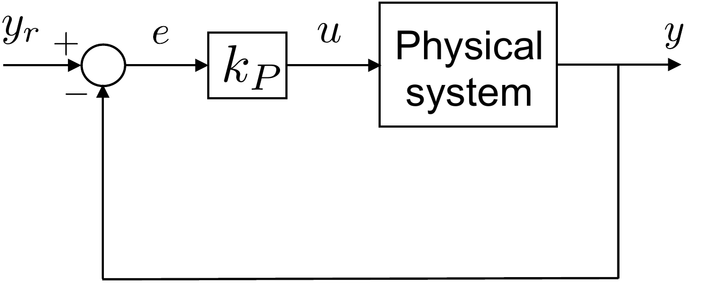
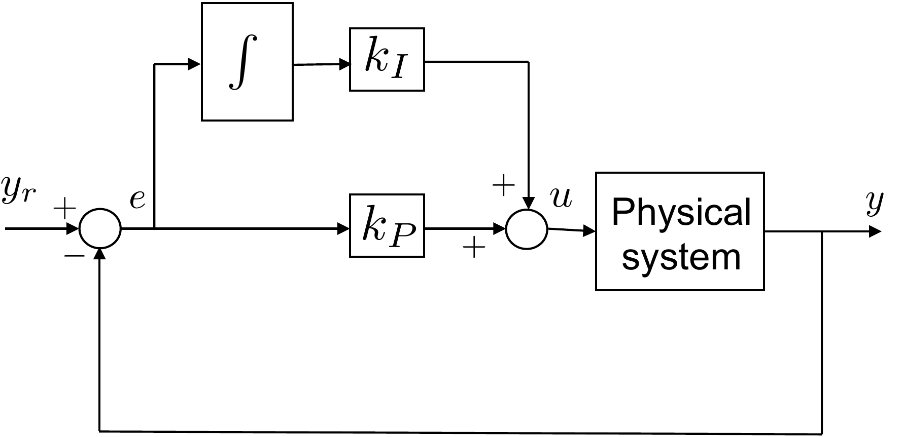
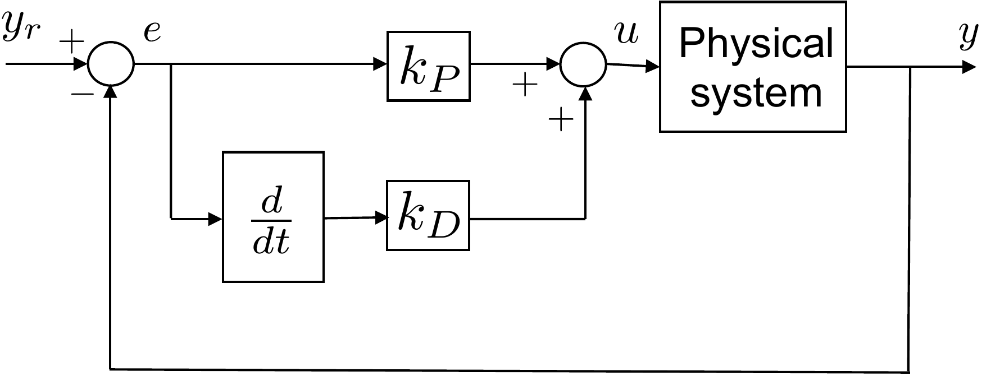
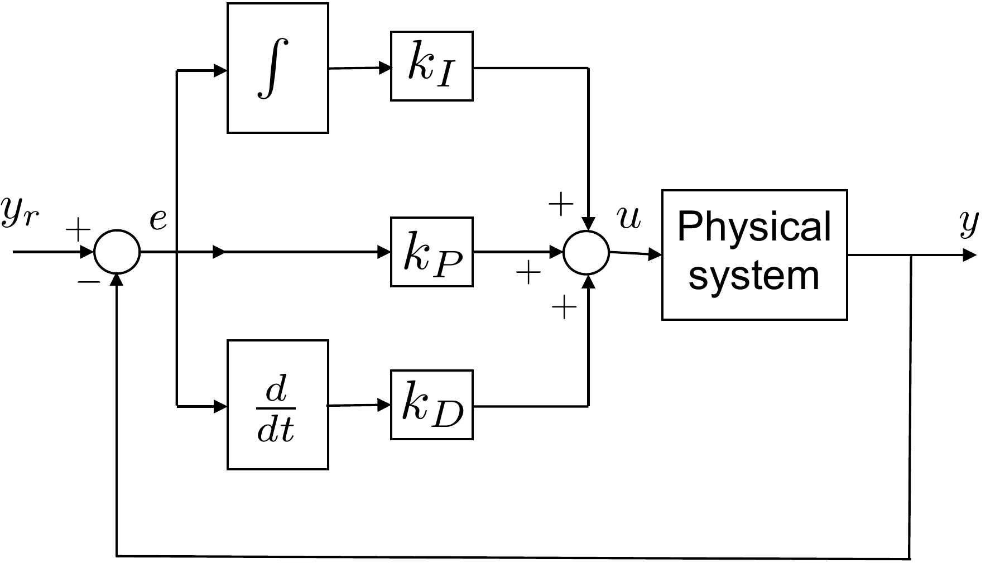
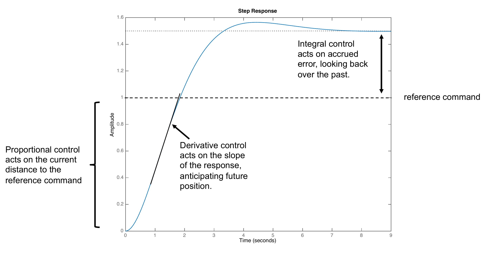
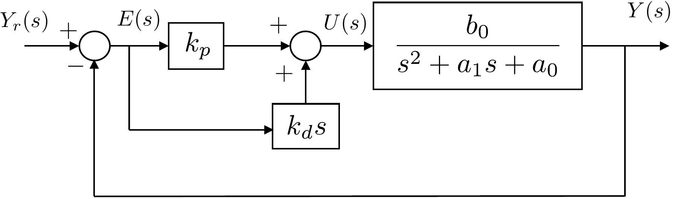
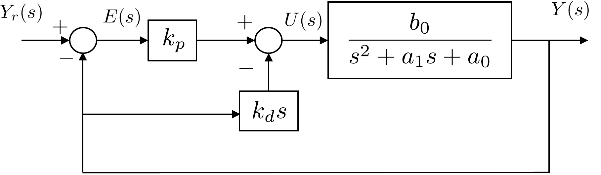
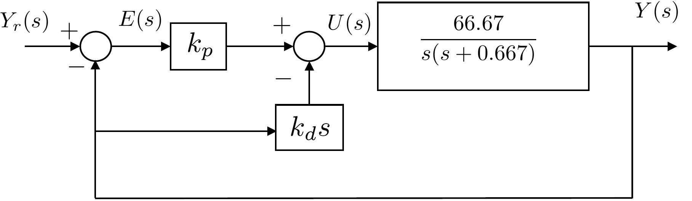

In this part of the book we will introduce feedback control by
studying the most commonly used industrial control law, the so-called
proportional-integral-derivative control, or PID control. PID controllers are
widely used because they are intuitive and easy to understand, they can
be designed without any understanding of the underlying physics of the
system, and a model of the system is not required, which is especially
important in the chemical processing industry. However, the stability
and performance of the closed-loop system can only be guaranteed when
using PID control on second-order systems. In
Part IV on
observer-based control and
Part V on loopshaping,
we will extend the basic ideas covered in this Part to higher-order
systems.
Fig.6.1 shows a basic
proportional control strategy. The output \(y\) of the physical system is subtracted
from the commanded reference output \(r\) to produce the error
\(e=r-y\). Proportional control
determines the input to the system \(u\) to be proportional to the error, i.e.,
\(u=k_P e\). The constant gain \(k_P\) is called the proportional
gain.

Figure 6.1. Proportional Control. The feedback
control is a gain kp multiplied by
the error.
Proportional control can be augmented with integral control to produce PI
control, as shown in
Fig.6.2. The basic idea is to
integrate the error so that the system responds to error accrued in the
past. The constant gain \(k_I\) is
called the integral gain.

Figure 6.2. Proportional plus Integral (PI) Control.
The feedback control is a linear combination of proportional and
integral control.
Alternatively, proportional control can be augmented with a
derivative control as shown in
Fig.6.3. The idea is to respond to
how fast the error is changing, or the derivative of the error. The
constant gain \(k_D\) is called the
derivative gain.

Figure 6.3. Proportional plus Derivative (PD)
Control. The feedback control is a linear combination of proportional
and derivative control.
When all three elements are used, as shown in
Fig.6.4, the resulting controller
is called a PID control. In
Part III of this book, we will explore
various aspects of PID control. Many of these concepts can be
generalized to other control schemes in later chapters, and so our study
of PID control will also help to motivate and understand more advanced
concepts.

Figure 6.4. Proportional plus Integral plus
Derivative (PID) Control. The feedback control is a linear combination
of proportional, integral, and derivative control.
Intuition for PID control can be gained by considering the step
response shown in
Fig.6.5. At the beginning of the
response, there is a significant error between the current output \(y(t)\) and the reference command \(r(t)\). The proportional control term will
tend to push the system so as to reduce the gap between \(y(t)\) and \(r(t)\). As \(y(t)\) begins to change, a fast response
may lead to significant overshoot due to the momentum in the system.
Therefore, if it is moving too quickly, we may want to slow down the
response, or if it is moving too slowly, we may want to speed up the
response. Derivative control is used to affect these changes. After the
response has settled into steady state, there may be significant
steady-state error, as shown in
Fig.6.5. Integral control adds up this
steady error and will eventually act to reduce the steady-state error. A
good example is an aircraft in a constant crosswind. An integrator can
be used to correct the response of the aircraft so that it crabs into
the wind to maintain its desired flight path.

Figure 6.5. Intuitive interpretation of PID control.
Proportional control acts on the current error, integral control acts on
accrued past error, and derivative control acts on anticipated future
error.
Part III of the book is organized as
follows. In
Chapter 10 we will show how PD
control can be used to specify the desired closed-loop poles of a
second-order system. In
Chapter 11 we introduce the concepts
of rise time, natural frequency, and damping ratio for second-order
systems and show how these concepts relate to the location of the
closed-loop poles. We also show how these quantities can be used to
design PD controllers for second-order systems and cascades of
second-order systems. In
Chapter 12 we use the final value
theorem to show the effect of integrators on the closed-loop system. We
introduce the notion of system type in the context of reference
tracking and disturbance rejection. Finally, in
Chapter 13 we show how to
write computer code to implement PID controllers.
7 Pole Placement for Second-Order
Systems
7.1 Theory
Suppose that the model for a linearized physical system is given by
the second-order transfer function \[\tag{7.1}
P(s) = \frac{b_0}{s^2 + a_1s + a_0}.\] The open-loop
poles of the plant \(P(s)\) are defined to be the roots of the
open-loop characteristic polynomial\[\Delta_{ol}(s) = s^2 + a_1 s + a_0,\]
which are given by \[p_{ol} = -\frac{a_1}{2}
\pm \sqrt{\left(\frac{a_1}{2}\right)^2-a_0}.\] Note that the
open-loop poles are determined by the physical parameters and that the
poles may be in the right half-plane. If we use PD control to regulate the output
\(y\) to the reference command \(r\), then the block diagram is shown in
Fig.7.1.

Figure 7.1. PD control of a second-order
system.
The transfer function for the closed-loop system can be derived by
noting from the block diagram that \begin{align}
& Y(s) = \left(\frac{b_0}{s^2 + a_1s + a_0}\right)\left(k_P + k_D
s\right)\left(R(s)-Y(s)\right) \notag \\
\implies & (s^2 + a_1s + a_0)Y(s) = \left(b_0k_P + b_0k_D
s\right)\left(R(s)-Y(s)\right) \notag \\
\implies & \left[(s^2 + a_1s + a_0)+\left(b_0k_P + b_0k_D
s\right)\right]Y(s) \\
& = \left(b_0k_P + b_0k_D s\right)R(s) \notag \\
\implies & (s^2 + (a_1 + b_0k_D)s + (a_0+b_0k_P))Y(s) \\
& = \left(b_0k_P + b_0k_D s\right)R(s) \notag \\
\implies & Y(s) = \frac{b_0k_D s + b_0k_P}{s^2 + (a_1 + b_0k_D)s +
(a_0+b_0k_P)}R(s). \tag{7.4}
\end{align}
Equation 7.4
constitutes the closed-loop transfer function for the system under
the influence of PD control. The closed-loop poles are given by the roots
of the closed-loop characteristic polynomial\[\Delta_{cl}(s) = s^2 + (a_1+b_0k_D) s +
(a_0+b_0k_P),\] which are \[p_{cl} =
-\frac{a_1 + b_0k_D}{2} \pm
\sqrt{\left(\frac{(a_1+b_0k_D)}{2}\right)^2-(a_0+b_0k_P)}.\] Note
that the closed-loop poles can be specified by the designer by selecting
\(k_P\) and \(k_D\). The basic idea is to select desired
closed-loop poles \(-p_1^d\) and \(-p_2^d\) and then to form the desired
characteristic polynomial \[\Delta_{cl}^d(s) = (s+p_1^d)(s+p_2^d)
\stackrel{\triangle}{=}s^2 + \alpha_1 s + \alpha_0.\] By setting
\(\Delta_{cl}(s)=\Delta_{cl}^d(s)\) we
can equate the leading coefficients of each term of the polynomial and
solve for the gains \(k_P\) and \(k_D\) as \[\begin{aligned}
k_P &= \frac{\alpha_0-a_0}{b_0} \\
k_D &= \frac{\alpha_1-a_1}{b_0}.
\end{aligned}\]
One of the disadvantages to the PD architecture shown in
Fig.7.1 is the introduction of a
zero in the closed-loop transfer function. Note that while the open-loop
system 7.1
does not have a zero, the closed-loop
system 7.4
has a zero at \[z_{cl} = -
\frac{k_P}{k_D}.\] The presence of the zero will modify the
closed-loop response of the system. A simple trick that removes the zero
is to use the control structure shown in
Fig.7.2. In this particular case,
the differentiator acts only on the output \(y\) and not on the error \(e\). Notice the change of sign on the
signal coming from the differentiator.

Figure 7.2. PD control of a second-order system,
where the derivative control only differentiates the output y and not the error e.
In this case the closed-loop transfer function is calculated as \begin{align}
& Y(s) = \left(\frac{b_0}{s^2 + a_1s + a_0}\right)\left(k_P
(R(s)-Y(s)) - k_D s Y(s) \right) \notag \\
\implies & (s^2 + a_1s + a_0)Y(s) = \left(b_0k_P (R(s)-Y(s)) -
b_0k_D s Y(s) \right) \notag \\
\implies & \left[(s^2 + a_1s + a_0)+\left(b_0k_P + b_0k_D
s\right)\right]Y(s) = b_0k_P R(s) \notag \\
\implies & (s^2 + (a_1 + b_0k_D)s + (a_0+b_0k_P))Y(s) = b_0k_P R(s)
\notag \\
\implies & Y(s) = \frac{b_0k_P}{s^2 + (a_1 + b_0k_D)s +
(a_0+b_0k_P)}R(s). \tag{7.5}
\end{align} Note that the closed-loop transfer
function 7.5
has the same poles as
Equation 7.4,
but that the zero has been removed. An added benefit to the structure
shown in
Fig.7.2 is that when \(r(t)\) is a step input, the derivative can
introduce a large signal spike in \(u(t)\). These large spikes are removed by
only differentiating \(y(t)\) instead
of \(e(t)=r(t)-y(t)\).
(a) Given the open-loop transfer function found in problem
3.1.6, find the open-loop poles
of the system, when the equilibrium angle is \(\theta_e=0\).
(b) Using the PD control architecture shown in
Fig.7.2, find the closed-loop
transfer function from \(r_{\theta}\)
to \(\theta\) and find the closed-loop
poles as a function of \(k_P\) and
\(k_D\).
(c) Select \(k_P\) and \(k_D\) to place the closed-loop poles at
\(p_1=-3\) and \(p_2=-4\).
(d) Using the gains from part (c), implement the PD control for the
single-link robot arm in simulation and plot the step response for an
amplitude of 30 degrees.
Design Study A guided exercise
Compute the PD gains
Match the closed-loop
characteristic polynomial to desired poles at \(-3\) and \(-4\).

Use this PD feedback structure to derive the
closed-loop characteristic polynomial.
Step 1. Desired characteristic polynomial
Show solution for Step
1
Answer:\((s+3)(s+4)=s^2+7s+12\).
Step 2.
PD gains
Show solution for Step
2
Answer: Matching coefficients
gives \(k_P=0.18\) and \(k_D=0.095\).
Pseudocode
The complete solution includes a PD
controller class and a simulation script. Before opening it, outline
each component separately.
These prompts are ungraded. They are
intended to connect the gain calculation to the implementation code in
the complete solution.
Complete solution
The open-loop transfer function from homework 3.1.6 is \[\Theta(s) =
\left(\frac{\frac{3}{m\ell^2}}{s^2+\frac{3b}{m\ell^2}s}\right)\tilde{\tau}(s).\]
Using the parameters from Section 3.1
gives \[\Theta(s) =
\left(\frac{66.67}{s^2+0.667s}\right)\tilde{\tau}(s).\] The
open-loop poles are therefore the roots of the open loop polynomial
\[\Delta_{ol}(s) = s^2+0.667s,\] which
are given by \[p_{ol} = 0, -0.667.\]
Using PD control, the closed-loop system is therefore shown in
Fig.7.3.
Figure 7.3. PD control of the single-link robot
arm.
The transfer function of the closed-loop system is given by \[\begin{aligned}
& \Theta(s) = \left(\frac{66.67}{s^2+0.667s}\right)\left(k_P
(R_\theta(s)-\Theta(s)) - k_D s \Theta(s) \right) \\
\implies & (s^2+0.667s)\Theta(s) = \left(66.67k_P
(R_\theta(s)-\Theta(s)) - 66.67k_D s \Theta(s) \right) \\
\implies & (s^2 + (0.667 + 66.67k_D)s + 66.67k_P)\Theta(s) =
66.67k_P R_\theta(s) \\
\implies & \Theta(s) = \frac{66.67k_P}{s^2 + (0.667 + 66.67k_D)s +
66.67k_P}R_\theta(s).
\end{aligned}\] Therefore, the closed-loop poles are given by the
roots of the closed-loop characteristic polynomial \[\Delta_{cl}(s) = s^2 + (0.667 + 66.67k_D)s +
66.67k_P\] which are given by \[p_{cl}
= -\frac{(0.667 + 66.67k_D)}{2} \pm \sqrt{ \left(\frac{(0.667 +
66.67k_D)}{2}\right)^2 - 66.67k_P}\] If the desired closed-loop
poles are at \(-3\) and \(-4\), then the desired closed-loop
characteristic polynomial is \[\begin{aligned}
\Delta_{cl}^d &= (s+3)(s+4) \\
&= s^2 + 7s + 12.
\end{aligned}\] Equating the actual closed-loop characteristic
polynomial \(\Delta_{cl}\) with the
desired characteristic polynomial \(\Delta_{cl}^d\) gives \[s^2 + (0.667 + 66.67k_D)s + 66.67k_P = s^2 + 7s +
12,\] or by equating each term we get \[\begin{aligned}
0.667 + 66.67k_D &=7 \\
66.67k_P &= 12.
\end{aligned}\] Solving for \(k_P\) and \(k_D\) gives \[\begin{aligned}
k_P &= 0.18 \\
k_D &= 0.095.
\end{aligned}\]
A Python class that implements a PD controller for the single link
robot arm is shown below.
# 3rd-partyimport numpy as np# local (controlbook)import case_studies.A_arm.params as Pfrom case_studies.common.controller_base import ControllerBaseclass ArmControllerPD(ControllerBase):def__init__(self, use_feedback_linearization: bool=True):# tuning parameters p1 =-3.0 p2 =-4.0# system parameters b0 = P.tf_num[-1] a1, a0 = P.tf_den[-2:]# desired characteristic equation parameters# des_CE: s^2 + alpha1*s + alpha0 = s^2 + (a1 + b0*kd)s + (a0 + b0*kp) des_CE = np.poly([p1, p2]) alpha1, alpha0 = des_CE[-2:]# find gainsself.kp = (alpha0 - a0) / b0self.kd = (alpha1 - a1) / b0print(f"{self.kp =:.2f}, {self.kd =:.3f}")self.tau_eq = P.tau_eqself.use_feedback_linearization = use_feedback_linearizationdef update_with_measurement(self, r, y):raiseNotImplementedError("This controller only uses state feedback.")def update_with_state(self, r, x):# unpack references and states theta_ref = r[0] theta, thetadot = x# theta (modified) PD error = theta_ref - theta tau_tilde =self.kp * error -self.kd * thetadotifself.use_feedback_linearization: tau_fl = P.m * P.g * P.ell /2* np.cos(theta) tau = tau_tilde + tau_flelse: # use equilibrium (Jacobian linearization)# NOTE: likely not work well (or at all) for large angles tau = tau_tilde +self.tau_eq u = np.array([tau])return u
Code that simulates closed-loop system is given below.
Complete simulation code for MATLAB, Python, and Simulink can be
downloaded at http://controlbook.byu.edu.
7.3 Interactive PD Pole Placement
Check
Chapter 7 activity
Match desired poles to PD gains
For a plant b0/(s2+a1s+a0),
choose desired closed-loop poles at -sigma +/- j omegad. The
activity computes the desired characteristic equation and the PD gains.
Plant
denominatorDesired characteristic
equationPD gainsClosed-loop coefficient
checkDamping
ratioNatural
frequency
Derivative gain changes the coefficient on s, while proportional gain
changes the constant term in the second-order characteristic equation.
7.4 Knowledge Check
Q1.
Transient response
In PD pole
placement, what primarily determines the closed-loop transient
response?
Q2.
Derivative gain
For the chapter's
second-order PD design equation, which term does derivative gain
directly affect?
Q3. Desired polynomial
For desired poles at -2 +/- j3, enter the constant coefficient of the
desired polynomial.
Show solution
Answer: 13, because σ2 +
ωd2 = 22 + 32.
Q4. Proportional gain
For the plant and desired closed-loop coefficient
a0 = 1, b0 = 2, a0 +
b0kP = 13,
enter the proportional gain kP.
Show solution
Answer: 6, because kP = (13 - 1)/2.
Q5. Derivative gain
For the plant and desired coefficient on s,
a1 = 1, b0 = 2, a1 +
b0kD = 4,
enter the derivative gain kD.
Show solution
Answer: 1.5, because kD = (4 - 1)/2.
Q6. Damping from pole location
Which stable pole pair is the most
underdamped?
Q7. Natural frequency trend
If damping ratio is held fixed and natural
frequency is increased, what usually happens to rise time?
Q8. Coefficient matching
A
closed-loop characteristic polynomial is s2 + 4s + k. To
match desired poles at -2 +/- j1, what value of k is needed?
7.5 Notes and References
The concept of using feedback to place the poles of the system at
desired locations is a much deeper topic than is covered in this
chapter. While the method discussed in this chapter is only applicable
to second-order systems, it is usually possible to arbitrarily assign
the poles for an \(n^{th}\) order
system. In general, to assign \(n\)
poles will require \(n\) gains. We will
discuss pole placement in more detail in
Chapter 14 of this book.